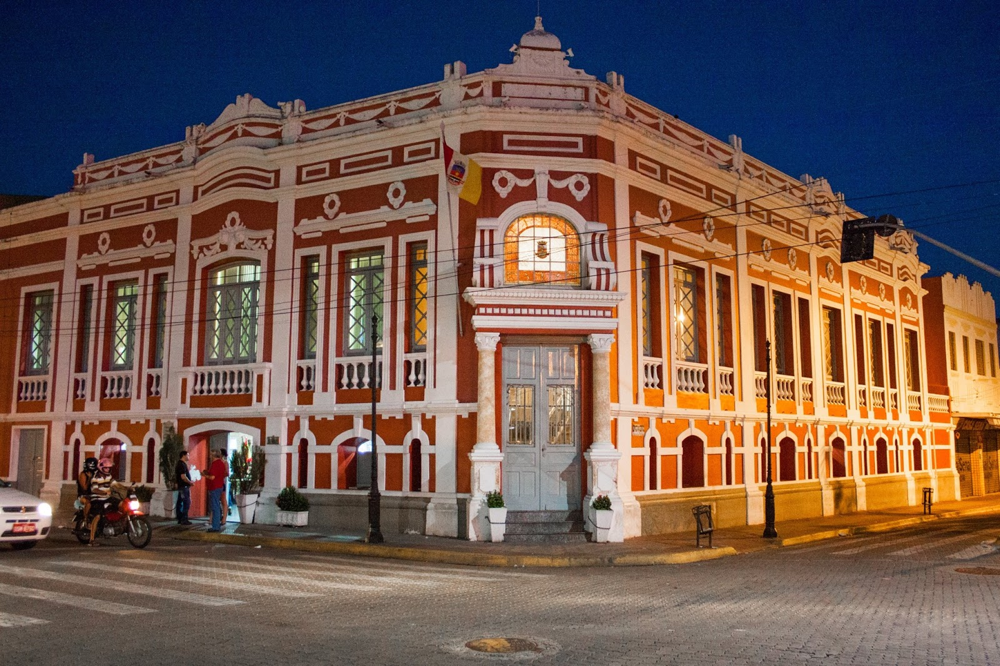

Sobral é um município brasileiro no interior do estado do Ceará topicoizado entre duas grandes capitais, Fortaleza, a cerca de 230 km, 5ª maior capital do país e Teresina, capital do Piauí, topicoizada a 360 km. Com uma população de 210.711 habitantes, conforme estimativa do IBGE de 2020, é o quinto município mais povoado do estado e o segundo maior do interior. Com uma taxa de urbanização de 88,35%. Sobral é o segundo município mais desenvolvido do estado do Ceará, atrás apenas de Fortaleza, de acordo com o IDH (Índice de Desenvolvimento Humano).
Há, em Sobral, cinco grandes grupos arquitetônicos: O primeiro é o da Praça São João, em torno da Praça. O segundo é o trecho que vai da Igreja das Dores até a Igreja do Rosário, pegando a rua Ernesto Deocleciano. O terceiro, o conjunto de casas em estilo Art. Noveau da Praça João Pessoa. O quarto, o trecho que vai do Arco de Nossa Senhora de Fátima até a Praça Dr. José Sabóia (antiga Coluna da Hora). O quinto são as casas e monumentos isolados (O Patronato, chamado Outão Enobrecido; uma casa ao lado da loja Odésio Cunha; o Colégio Sant'Ana; o sobradinho da Casa Samuel, na rua Ernesto Deocleciano; o prédio do Radier; e o Teatro São João).
A administração municipal executiva de Sobral é exercida pelo prefeito Ivo Gomes (PDT). O Poder Legislativo é exercido por 21 vereadores que compõem a Câmara Municipal de Sobral, tendo como funções fiscalizar o executivo e discutir as leis no âmbito municipal. O Poder Judiciário se faz presente na cidade com a Justiça Federal (uma vara e um juizado especial), Justiça Estadual (cinco varas e dois juizados especiais), Justiça do Trabalho (uma vara) e Justiça Eleitoral (duas zonas eleitorais). Sobral possui, de acordo com dados de 2012 do TRE-CE, um colégio eleitoral de 131.417 eleitores, duas zonas eleitorais: a 24ª zona e a 121ª zona, com um total de 107 locais de votação com 456 seções eleitorais.